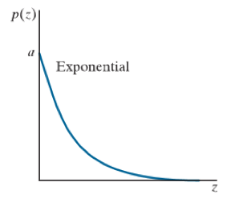

Image-Restoration
本文用来总结和实现digital image processing中关于图像恢复和重建的部分。
一种退化模型
书中将图像退化的过程分成了两步，一步是退化(Degradation)，一步是加性噪声(additive noise)。那么整个模型就是一张原图\(f(x,y)\)受到了退化\(\mathcal{H}\)和加性噪声\(\eta(x,y)\)最后得到退化图\(g(x,y)\)，我们希望通过恢复过程得到图\(\hat{f}(x,y)\)，它是原图\(f(x,y)\)的一个逼近。
上述叙述过程可以用图1的流程图来描述.
噪声模型
数字图像中噪声的出现主要有两个地方，一个是产生图像过程(acquisition)；另一个是传输图像过程(transmission)。比如对于一个CCD相机来说，所拍摄场景的亮度和传感器温度很大程度决定了相机的噪声。
一些常见的噪声种类
散粒噪声(shot noise)
散粒噪声是一种实验观测中的读出噪声，当观测中数量有限的携带能量的粒子（例如电路中的电子或光学仪器中的光子）数量少到能够引发数据读取中出现可观测到的统计涨落，这种读出的统计涨落被称作散粒噪声。
散粒噪声的本质在于，通过测量到的电流强度或光强度能够给出收集到的电子或光子的平均数量，但无法得知任意时刻实际收集到的电子或光子数量。实际的数量可能会高于、低于或相当于平均的数量，其分布按平均值遵循泊松分布。由于泊松分布在大量粒子数时趋向于正态分布，在大量粒子存在时信号中的散粒噪声会呈现正态分布。散粒噪声的标准差此时等于平均粒子数的平方根，信噪比从而为
\[SNR = \frac{N}{\sqrt{N}} = \sqrt{N}\]
这里的N是采集到的平均粒子数，当N很大时信噪比也会很大。因此尤其当测量中采集的粒子数很少时对散粒噪声的分析就显得非常重要.
读出噪声(Read noise)
读出噪声，就是相机在读出信号时产生的噪声，是电子通过前置放大器和模-数转换器（ADC）转换为数字信号时引入的不确定性。这种噪声遵循高斯分布。
暗电流(Dark current)
暗电流是由相机传感器产热时产生电子产生的。这些电子也会被采集，从而形成噪声。暗电流的特点是随着时间累积，因此在长曝光的应用场景中，暗电流越大，所累积的噪声影响越大。由于暗电流是热量产生的，因此制冷是降低暗电流的主要方法。
一些重要的噪声概率建模
上一节介绍了一些常出现的噪声种类，这些种类出现在图像上的形式我们可以用数学建模来公式化表达。噪声就是一些随机数，这些随机数通过概率密度函数（PDF）或累计分布函数（CDF）来唯一的描述。下面介绍一些最常用的噪声概率模型，这些噪声模型广泛应用在各种图像降噪建模中。
Gaussian Noise
高斯噪声的概率密度函数如下：
\[p(z) = \frac{1}{\sqrt{2\pi}\sigma} e^{-\frac{(z-\bar{z})^2}{2\sigma^2}}\ \ -\infty < z < \infty \tag{1}\]
公式1有以下几个参数需要说明：
z代表高斯随机变量的亮度
\(\bar{z}\)代表的是z的均值
\(\sigma\)代表标准差，\(\sigma^2\)代表方差
高斯概率密度函数图像如下所示：
根据图像，可知对于一个值z，其落入\(\bar{z} \pm \sigma\)的概率接近0.68，落入\(\bar{z} \pm 2 \sigma\)的概率接近0.95.
高斯噪声的累计概率分布如下：
\[F(z) = \int^z_{-z} p(v)dv\]
Rayleigh Noise
瑞丽噪声的概率密度函数为：
\[p(z) = \left\{ \begin{array}{rc1} & \frac{2}{b} (z-a)e^{-(z-a)^2/b} & z \ge a \\ & 0 & z < a \end{array}\right. \tag{2} \]
其中：
z的均值为\(\bar{z} = a + \sqrt{\pi b /4}\)
z的方差为\(\sigma^2 = \frac{b(4-\pi)}{4}\)
瑞丽概率密度函数图像如下所示：
瑞丽概率密度函数呈现出一种倾斜的状态，非常适合对倾斜的直方图进行建模。
Rayleigh的累计概率分布如下：
\[F(z) = \left\{ \begin{array}{rc1} & 1-e^{-(z-a)^2 /b} & z \ge a \\ & 0 & z < a \end{array}\right. \tag{3} \]
Erlang Noise
Erlang噪声概率密度函数为：
\[p(z) = \left\{ \begin{array}{rc1} & \frac{a^b z^{b-1}}{(b-1)!} e^{-az} & z \ge 0 \\ & 0 & z < 0 \end{array}\right. \tag{4} \]
其中：
a>b,且b是一个正整数
z的均值为\(\bar{z} = \frac{b}{a}\)
z的方差为\(\sigma^2 = \frac{b}{a^2}\)
Erlang Noise的概率密度函数图像为：
Erlang噪声的累计分布函数为：
\[F(z) = \left[1 - e^{az} \sum_{n=0}^{b-1} \frac{(az)^n}{n!} \right] \tag{5}\]
Exponential Noise
指数噪声其实是Erlang的一个特例，当Erlang的b=1时，公式被称为指数噪声概率密度函数：
\[p(z) = \left\{ \begin{array}{rc1} & a e^{-az} & z \ge 0 \\ & 0 & z < 0 \end{array}\right. \tag{6} \]
其中：
z的均值为\(\bar{z} = \frac{1}{a}\)
z的方差为\(\sigma^2 = \frac{1}{a^2}\)
从Erlang Noise的图4可以看出，如果我们让b=1，那么那个图像的峰值位置将会被移动到z=0处：

Exponential噪声的累计分布函数为：
\[F(z) = \left\{ \begin{array}{rc1} & 1 - e^{-az} & z \ge 0 \\ & 0 & z < 0 \end{array}\right. \tag{7} \]
Uniform Noise
均匀噪声的概率密度函数为：
\[p(z) = \left\{\begin{array}{rc1} &\frac{1}{b-a} & a \le z le b \\ &0 & \mbox{otherwise} \end{array}\right. \tag{8}\]
其中：
z的均值为\(\bar{z} = \frac{a+b}{2}\)
z的方差为\(\sigma^2 = \frac{(b-1)^2}{12}\)
均匀噪声的累计分布函数为：
\[F(z) = \left\{\begin{array}{rc1} &0 & z < a \\ &\frac{z-a}{b-a} & a \le z \le b \\ &1 & z >b \end{array}\right. \tag{9}\]
均匀噪声一般不用做图像污染的噪声，但这不影响均匀噪声非常重要。这是因为均匀噪声能够产生其他噪声的分布：
假设\(\omega\)是一个均匀分布在区间(0,1)的随机变量，那么为了获得一个指定的累计分布函数F的随机变量z，可以通过计算方程：
\[z = F^{-1} (\omega) \tag{10}\]
这个公式简单且重要，因为我们可以用过一个服从均匀分布的随机变量\(\omega\)，产生我们期望的一个服从特定CDF的随机变量z。但能够运用这个公式有一个先觉条件：公式6的右半部分需要是一个封闭式(closed-form expression)，即函数表达式是有限标准操作的组合（标准操作一般不包括极限、微分和积分）。因此，如果一个随机变量z的累计分布函数不是一个封闭式，那么就没办法用这个公式。
Salt-and-Pepper Noise
椒盐噪声是上述所有噪声概率密度函数中最特殊的一种，其特殊在椒盐噪声的分布图样不依赖于它的均值和方差，而是由单独的salt概率和pepper概率组成的：
\[p(z) = \left\{ \begin{array}{rc1} &P_s & \mbox{for}\ z=2^k -1 \\ &P_p & \mbox{for}\ z=0 \\ &1-(P_s+P_p) & \mbox{for}\ z=V \end{array}\right. \tag{11} \]
其中，k是色深位数。
我们假设有一张椒盐噪声的噪声图像\(\eta(x,y)\)，这个图像与原图\(f(x,y)\)作用时，有三种情况，第一种如果被污染位置为salt，那么这个位置的像素亮度被设置为最大\(2^k-1\)；第二种如果被污染位置为pepper，那么这个位置被设置为亮度最小0;第三种就是保留原来的像素亮度。
关于公式7有以下几点需要说明：
公式7中的\(P_s,P_p\)是可以任意指定的，比如\(P_s = 0.02,P_p=0.01\) ,说明图像出现salt的概率为0.02，出现pepper的概率为0.01，其余为正常像素值。
椒盐噪声的均值和方差是随着不用的\(P_s,O_p\)计算出来的：
\[\bar{z} = (0)P_p + K(1-P_s-P_p)+(2^k -1 )P_s\]
\[\sigma^2 \ (0-\bar{z})^2 P_p + (K-\bar{z})^2(1-P_s-P_p)+(2^k-1)^2 P_s\]
椒盐噪声的累计分布函数为：
\[F(z) = \left\{ \begin{array}{rc1} & 0 & \mbox{for}\ z<0 \\ & P_p & \mbox{for}\ 0 \le z <k \\ & 1-P_s & \mbox{for}\ k \le z <2^n-1 \\ & 1 & \mbox{for}\ 2^n-1 \le z \end{array}\right. \tag{12} \]
Lognormal
lognormal的特点是假如随机变量X服从lognormal分布，那么随机变量\(Y = ln(X)\)服从正态分布.
lognormal的概率密度函数为：
\[p(z) = \frac{1}{\sqrt{2 \pi} b z} e^{-\frac{(lnz - a)^2}{2b^2}} \ z>0 \]
lognormal的概率密度函数图像为：
lognormal的累计分布函数为：
\[F(z) = \int_0^z p(v)dv\]
小结
高斯噪声通常出现在电路噪声、由低亮度或高温导致的传感器噪声
瑞丽适合描述深度成像(range iamging)中的噪声现象
椒盐噪声出现在错误的快门
Erlang噪声在激光成像时很有用
大多复杂累计分布的噪声都可以使用均匀分布结合公式10生成
噪声的Matlab实现
Matlab中提供了函数imnoise用以将传入的图像f按照特定的噪声进行污染,有些噪声在Matlab中内置，可以直接使用参数定义，有些特定表达的噪声可能在Matlab中不存在，需要自定义。imnoise传入参数规则：
1 | g = imnoise(f,type,parameters) |
下面是一些能够直接使用Matlab内建的噪声类型的使用方法
加入高斯噪声
回顾前面，高斯噪声出现在高温或者低亮度的环境。Matlab中的imnoise的高斯噪声有如下几个：
1 | g = imnoise(f,'gaussian',m,var) |
上述主要注意的是:
局部方差高斯噪声的概念，能够客制化图像中高斯噪声按照不同方差高斯分布产生。
对于RGB图像，在进行指定方差进行污染时，需要小心传入的方差图像的通道数也要为三通道
加入椒盐噪声
椒盐噪声通常出现在错误的快门开关时，Matlab中可用：
1 | g = imnoise(f,'salt & pepper',d) %d指定了被椒盐噪声污染的比率 |
上述要注意的是，Matlab的椒盐噪声并未单独的指定salt的比率和pepper的比率。如果需要分别指定salt/pepper出现的概率，需要客制化一个函数。
产生指定分布的噪声
有些时候我们期望噪声具备一定的分布规则（知道它的概率密度函数或累积分布函数），但这种噪声可能Matlab并不内建，因此我们需要具备产生指定分布噪声的能力。在上述讲噪声概率建模中提到了均匀分布，均匀分布自身很少以噪声形式出现，大多情况均匀噪声是被用来产生其他分布形式的噪声。在前面讲述公式6提到，只有公式6右半部分,即从CDF反解出来的结果,是封闭形式才能够利用公式6。因此一些不存在封闭形式的可能需要其他方法。本节将抛开matlab自带的imnoise函数，根据噪声建模公式或者噪声自身特点来产生指定分布的噪声图像。因此，本节注重公式推导和代码实现。
存在封闭式
1.Rayleigh Noise
以Rayleigh噪声为例子，描述如何使用公式6进行Rayleigh噪声生成：
已知Rayleigh分布的累积分布函数形式为：
\[F(z) = \left\{ \begin{array}{rc1} & 1-e^{-(z-a)^2 /b} & z \ge a \\ & 0 & z < a \end{array}\right. \tag{3} \]
其中b>0，结合公式6，为了解出随机变量z，写：
\[1 - e^{-(z-a)^2 / b} = \omega\]
然后得到的z的表达：
\[z = a + \sqrt{-b ln(1-\omega)}\]
从Rayleigh的图3可以看出，随机变量z在服从Rayleigh时z的取值大于等于a，这一点也可以从上面这个公式得到，这是因为平方根显然是大于零的。有了这个表达，当我们拥有一个服从均匀分布的随机变量\(\omega\)时，就能够产生参数为a和b的服从Rayleigh分布的随机变量z.因此，称这个表达为随机变量生成器(random number generator equation):
\[z = a + \sqrt{-b ln(1-U(0,1))}\]
下面使用matlab对这个公式进行表达并产生Rayleigh噪声：
1 | RayleighNoise = a + sqrt(-b*log(1-rand(M,N))); |
2.Exponential Noise
类似的，指数分布(Exponential Noise)有生成器：
\[z = - \frac{1}{a} ln \left[ 1 - U(0,1) \right]\]
下面使用matlab对这个公式进行表达并产生Exponential噪声：
1 | function R = exponential(M,N,a) |
不存在封闭式
应用公式10其实就是反解噪声模型的累积分布函数，对于Rayleigh噪声分布而言，从上一小节可以推导得到一个封闭式的随机变量生成器。但看看噪声模型中的Lognroaml和Gaussian的累积分布函数，我们无法直接得到一个封闭形式的生成器。但可以利用一些其他方法来获得随机变量生成器。
3.lognormal noise
以lognormal为例，lognormal值随机变量ln(X)服从正态分布，因此写随机变量生成器：
\[z = e^{bN(0,1) + a}\]
得到服从lognormal的随机变量z。
下面使用matlab对这个公式进行表达并产生lognormal noise：
1 | R = exp(b * randn(M,N)+a); |
4.Erlang Noise
以Erlang为例，Erlang的生成器为：
\[z = E_1 + E_2 + ... + E_b\]
其中，\(E_i\)是参数为a的服从指数分布的随机变量。
下面使用matlab对这个公式进行表达并产生Erlang噪声：
1 | funciton R = erlang(M,N,a,b) |
5.Salt & Pepper
椒盐噪声的产生比较特殊，由两个概率控制：\(P_s\)出现salt的概率；\(P_p\)出现pepper的概率，\(1-P_s-P_p\)像素不变的概率。基本上使用的就是均匀分布附加一些额外的逻辑。
1 | function R = saltpepper(M,N,a,b) |
小结
本节展示了一系列噪声的产生方法,这些方法主要是运用了噪声模型的累积分布函数或是一些其它技巧产生的。
- 对于产生的噪声\(z=F^{-1}(w)\)，我们最关注的是随机变量z的取值。比如使用上述matlab代码可以产生各种各样的服从特定分布的随机变量z，为了验证随机变量确实符合期望的分布，可以产生一个一维的噪声数组，然后使用直方图绘制这个数组：
1 | %验证Erlang噪声输出出来的随机变量确实符合Erlang图样 |
输出直方图如下：
- 针对不同的噪声图在加入原始图像时还要小心溢出问题，椒盐噪声污染时需要特别小心不是求和运算。
周期噪声
在噪声模型中介绍了很多的噪声，这些噪声都是空间无关的噪声，即他们在图像表现上像素之间没有任何的位置关系。但是还有一种噪声是空间相关的，就是周期噪声。周期噪声一般出现在电力的干扰。结合傅立叶变换可知，对于这种周期性的噪声，不难理解最好的消除周期噪声的办法就是频率滤波。即我们将受到空间相关的周期噪声图样转换为频率图样后进行选择性滤波，然后转换回空间域。
在书中使用的周期性噪声的2D模型如下：
\[r(x,y) = A\sin\left[2\pi u_0 (x+B_x)/M + 2\pi v_0 (y+B_y)/N \right] \tag{13}\]
其中，\(x=0,1,2,...,M-1,y=0,1,2,...,N-1\),A为幅度，\(u_0,v_0\)确定了沿着x轴和y轴上正弦的频率，\(B_x,B_y\)描述了与原点的相位差。公式13为纯正弦周期的噪声在空间域上的表达。需要注意的是，公式13只描述了一个正弦噪声，但实际的图像噪声中可能包含多个不同方向、频率、强度的正弦组合。叠加后的噪声图将会变得复杂，无法从空间域进行观察，比如下图所示，是若干形式如13的正弦的一系列叠加：
公式13的傅立叶变换为：
\[R(u,v) = j \frac{AMN}{2} \left[ e^{-j 2\pi (u_0B_x /M + v_0 B_y/N)} \delta(u+u_0,v+v_0) - e^{j 2\pi (u_0B_x /M + v_0 B_y/N)} \delta(u-u_0,v-v_0) \right] \tag{14}\]
关于公式14有如下几点说明：
\(u=0,1,2,...,M-1\ \mbox{and}\ v=0,1,2,...,N-1\)
公式中出现不意外的两个脉冲点，这两个脉冲点是共轭的，且在频率坐标系上的\((u+u_0,v+v_0),(u-u_0,v-v_0)\)
公式中的脉冲函数使得除了脉冲点外，其他地方均为0
matlab仿真周期噪声
我们已经知道可以通过指定频域图像共轭脉冲点位置等价于在空间域图像产生一个正弦周期噪声图样，因此matlab仿真中编写产生周期噪声函数，这个函数接受数个脉冲点坐标（频域坐标）C，以及他们的幅值A、相位B，然后输出频域谱图S、空间域周期噪声图r、和傅立叶公式R。
1 | function [r,R,S] = imnoise3(M,N,C,A,B) |
关于上述代码还有几点需要补充：
R矩阵是一个二维傅立叶图像，它是一个复数图像（实数图像的傅立叶变换会是复数图像），由于我们已知周期噪声的傅立叶变换是两个共轭的在位置\((u+u_0,v+v_0),(u-u_0,v-v_0)\)处的脉冲，因此只需要在复数图像上的这两个位置添加公式14的值即可。
S=abs(R)得到了R矩阵的magnitude部分，从而可以画出R的谱图而忽略phase相位部分r=real(ifft2(ifftshift(R)))需要先把R矩阵恢复成低频在四角，高频在中心的频域图，然后再进行逆傅立叶变换最后取实数部分
测试：
1 | C = [0 64;0 128;32 32;64 0;128 0;-32 32]; |

噪声参数的估计
周期噪声的参数估计要么从空间图中找出周期性，那么使用傅立叶变换在频域图上找亮点，要么使用一些先验知识能够提前预估大致频率分布的位置。
如果成像系统能够客制化拍摄，那么就应该拍摄纯色图像，比如一种均匀光照射的灰色板，这种照片有利于噪声参数估计。
如果不能使用成像系统拍摄，只能使用现有的图像，那么可以提取已有照片中的小块常量背景作为噪声参数估计。
对2，3这两种图像进行直方图绘制会出现噪声的分布图样，直方图所表现的形状能够描述这是一种什么分布类型的噪声
对于一个满足2，3的图块S，假设\(p_S(z_i) \ i=0,1,2,...,L-1\)代表像素灰度从0到L-1出现的概率(L在8-bit图像中为256)，\(z_i\)代表出现的像素灰度值，那么图块S的均值为：
\[\bar{z} = \sum_{i=0}^{L-1} z_ip_S(z_i)\]
方差为：
\[\sigma^2 = \sum_{i=0}^{L-1}(z_i-\bar{z})^2 p_S(z_i)\]
有了均值和方差，就可以结合对直方图的概率密度函数的估计，选择合适的噪声模型进行估计。
matlab参数估计仿真
我们已经知道如果图像背景本身就是常量的话，那么这个图像可以直接用来作为噪声参数估计；但如果背景复杂的话，需要提取ROI进行噪声估计。提取ROI的一个准则就是选择的背景尽可能是常量的。matlab内建roipoly能够实现交互性的绘制ROI：
1 | B = roipoly(f) |
返回得到的B是一个尺寸与f一样的逻辑图像，即ROI区域为1，非ROI为0.然后可以对这个ROI进行直方图绘制观察噪声的分布特点：
1 | p = imhist(f(B)); |
Restoration in the presence of noise only - spatial filtering
如果图像仅仅被加性噪声如染，那么：
\[g(x,y) = f(x,y) + \eta(x,y)\]
频域上：
\[G(u,v) = F(u,v)+N(u,v)\]
空间中的噪声\(\eta(x,y)\)通常是未知的，因此一种降噪方法就是空间滤波，空间滤波的结果就是原图\(f(x,y)\)的估计\(\hat{f}(x,y)\)。 频率域上的噪声\(N(u,v)\)可能由于表现出某种周期性而能够估计，采用一定的频率滤波方法能够很好的滤除，但周期性的噪声毕竟是特例。
均值滤波
1.Arithmetic Mean Filter
\[\hat{f}(x,y) = \frac{1}{mn} \sum_{(r,c) \in S_{xy}} g(r,c)\]
算术均值就是box filter，即在一个子窗口\(S_{xy}\)里求均值后得到中心元素的估计值。算术均值滤波的特点是平滑周围区块像素，图像模糊。
matlab实现
1 | function f = amean(g,m,n) |
2.Geometric Mean Filter
\[\hat{f}(x,y) = \left[ \underset{(r,c)\in S_{xy}}{\Pi} g(r,c) \right]^\frac{1}{mn}\]
几何均值滤波在子窗口中相成然后取power，特点是能够达到类似算术均值的平滑效果，但又不会像算术均值那样损失太多的细节。
在编程上为了使得上述公式更加简单，两边同时取对数：
\[\begin{equation}\begin{aligned} ln \hat{f}(x,y) &= \frac{1}{mn} ln \left[ \underset{(r,c)\in S_{xy}}{\Pi} g(r,c) \right] \\ &= \frac{1}{mn} \underset{(r,c) \in S_{xy}}{\sum} ln \left[ g(r,c) \right] \\ \therefore \hat{f}(x,y) &= \exp{\left\{\underset{(r,c) \in S_{xy}}{\sum} ln \left[ g(r,c) \right]\right\}}^{1/m/n} \end{aligned} \end{equation} \]
matlab实现
1 | function f = gmean(g,m,n) |
3.Harmonic Mean Filter
\[\hat{f}(x,y) = \frac{mn}{\underset{(r,c)\in S_{xu}}{\sum} \frac{1}{g(r,c)}}\]
谐波均值滤波的特点是对salt&pepper中的salt（高亮）具有很好的滤除效果，但对pepper效果不好，对高斯噪声效果很好。
matlab实现
1 | function f = harmean(g,m,n) |
4.Contraharmonic Mean Filter
\[\hat{f}(x,y)= \frac{\underset{(r,c)\in S_{xy}}{\sum} g(r,c)^{Q+1}}{\underset{(r,c)\in S_{xy}}{\sum} g(r,c)^Q}\]
反谐波滤波对于salt$pepper有很好的滤除效果，但是需要计算两次：即当Q取正数时滤除pepper，当Q取负数时滤除salt。不难发现，如果Q=-1那么反谐波滤波退化为Harmonic Mean Filter，Q=0时退化成Arithmetic Mean Filter。
matlab实现
1 | function f = charmean(g,m,n,q) |
小结：
均值滤波主要是用的是求平均的方法替换掉小窗内中心元素的像素值，因此在一定程度上都会模糊化图像
算术均值和几何均值滤波适合滤除像高斯噪声这样的空间随机噪声，而且几何均值滤波相较于算术均值滤波模糊的程度较小
Contraharmonic均值滤波适合滤除salt&pepper噪声，但是其缺陷是需要分别知道到底是salt噪声还是pepper噪声，它只能单独进行滤波。如果错误的进行Q值设定将会输出错误的滤波结果
次序统计滤波
次序统计滤波主要原理就是将子窗口中的像素进行排序，然后按照特定的滤波方法选择像素进行中心像素覆盖。具体的滤波方法有中值滤波、Max&Min滤波、Midpoint滤波、Alpha-Trimmed Mean滤波。
1.Median Filter
中值滤波的公式表达为：
\[\hat{f}(x,y) = \underset{(r,c)\in S_{xy}}{median}\left\{ g(r,c) \right\}\]
中值滤波就是一个子窗口\(S_{xy}\)中心元素的像素值等于这个子窗口排序后的中间元素值.中值滤波对脉冲噪声有着出色的滤除效果，并且在滤除的同时又不会使图像像线性平滑那样模糊。
中值滤波过程可以重复进行，比如重复进行三次，这样能够大幅的去除脉冲噪声。但中值滤波在重复进行时仍然会一定程度的模糊化图像。
matlab实现
1 | function f = mfilt(g,m,n) |
2.Max&Min Filter
Max Filter即最大值滤波，表达如下:
\[\hat{f}(x,y) = \underset{(r,c)\in S_{xy}}{max} \left\{ g(r,c) \right\}\]
最大滤波可以腐蚀掉亮度低的区域。
Min Filter表达如下:
\[\hat{f}(x,y) = \underset{(r,c)\in S_{xy}}{min} \left\{ g(r,c) \right\}\]
最小滤波可以腐蚀掉亮度高的区域
matlab实现
1 | %max : 使用膨胀 |
3.Midpoint Filter
MidPoint Filter是最大最小滤波的一个组合：
\[\hat{f}(x,y) = \frac{1}{2} \left[ \underset{(r,c)\in S_{xy}}{min} \left\{ g(r,c) \right\}+ \underset{(r,c)\in S_{xy}}{max} \left\{ g(r,c) \right\} \right]\]
Midpoint Filter对于高斯噪声或均匀噪声最有效果。
matlab实现
1 | f1 = ordfilt2(g,1,ones(m,n),'symmetric'); %次序滤波最大 |
4.Alpha-Trimmed Mean Filter
对一个子窗口\(S_{xy}\)中的像素进行排序，如果我们去除掉亮度最低的\(d/2\)个像素，去除掉亮度最高的\(d/2\)个像素，最后剩下\(m*n - d\)个中间位置的有序像素\(g_R(r,c)\)。对余下的\(g_R(r,c)\)进行取均值运算：
\[\hat{f}(x,y) = \frac{1}{mn-d} \sum_{(r,c)\in S_{xy}}g_R(r,c)\]
关于上述公式有以下几点需要补充：
d的范围为0~mn-1，且在d=mn-1时只保留了中间像素，这个滤波器退化成了中值滤波；在d=0时退化成了算术均值滤波
这个滤波器对于多种噪声组合滤波有效，比如salt&pepper与高斯噪声的组合。这是显然的，因为我们知道算术均值滤波对于高斯噪声有较好的滤除效果，而均值滤波对于椒盐噪声有较好的滤除效果，因此这两个的结合有利于两种组合时的噪声滤除.
matlab实现
1 | function f = alphatrim(g,m,n,d) |
自适应局部降噪滤波
最简单的一种自适应局部降噪滤波建立在均值和方差之上。我们知道均值代表的是区域内的平均亮度，方差代表的是区域内的对比度。那么给定一个在坐标位置(x,y)的子窗\(S_{xy}\)，噪声的全局方差为\(\sigma_{\eta}^2\)，子窗口\(S_{xy}\)的局部亮度为\(\overline{z}_S_{xy}\)，子窗口局部方差为\(\sigma^2_{S_{xy}}\)。有了这四个量值就能够进行下面的滤波步骤：
如果\(\sigma_{\eta}^2\)为零，那么滤波器直接返回噪声图(g)上的对应坐标(x,y)作为原图(f)的估计
如果局部方差\(\sigma_{S_{xy}}^2\)相对\(\sigma_{\eta}^2\)很大，那么尽量返回一个接近噪声图(g)在位置(x,y)的值。这是因为如果局部方差大，说明局部对比度很高，说明这个局部可能与边缘相关。而自适应滤波应该尽可能的保留图像的边缘。
如果\(\sigma_{\eta}^2\)和\(\sigma_{S_{xy}}^2\)相等，那么返回窗口\(S_{xy}\)的算术均值。
整个过程可由一个公式描述：
\[\hat{f}(x,y) = g(x,y) - \frac{\sigma_{\eta}^2}{\sigma_{S_{xy}}^2} \left[g(x,y) - \overline{z}_{S_{xy}} \right]\]
上述过程唯一需要提前先验已知的是参数全局噪声的方差，这可以通过一些方法估计计算得到。其他参数均可以在子窗口中计算获得。公式还有一点需要注意，如果\(\sigma_{S_{xy}}^2\)大于等于\(\sigma_{\eta}^2\)时没有问题；但一旦小于将会出现负\(\hat{f}(x,y)\)。对于负数的态度有两个，一个是不允许负数，即两个方差的比值最大就是1.这个处理方法导致这个公式是个非线性公式。还有一个处理办法是允许负值，但是在最后输出图像\(\hat{f}\)前需要重新scale一次，这个处理方法导致图像会损失一定程度的动态范围(亮的地方不够亮，暗的地方不够暗)。
自适应局部降噪滤波具备一下特点：
需要对全剧噪声的方差有先验，而且输出的估计图像效果也与这个先验的准确度有关
将边界视作局部高对比度区域，巧妙规避了模糊边界的问题
计算复杂度更高
自适应中值滤波
自适应中值滤波具有如下特点：
能够滤除脉冲噪声(比如salt&pepper)
能够平滑一些非脉冲噪声(相较传统中值滤波的一种提升)
能够减少畸变(传统中值滤波总是会置换像素),即能够使得图像保持一定程度的锐利
具备一个可变化尺寸的子窗口\(S_{xy}\)
能够自适应更大比率的salt&pepper噪声(传统中值滤波一般只适合0.2的\(P_s\ \mbox{and}\ P_p\))
自适应中值滤波的执行需要如下参数：
\(z_{min}\) : \(S_{xy}\)中的最小亮度
\(z_{max}\) : \(S_{xy}\)中的最大亮度
\(z_{med}\) : \(S_{xy}\)中的中间亮度
\(z_{xy}\) : \(S_{xy}\)中的(x,y)位置的亮度
\(S_{max}\) : \(S_{xy}\)能够达到的最大窗口尺寸
自适应中值滤波的算法步骤分成了两步，第一步LevelA和第二步LevelB。
\[ \begin{aligned} &\mathbf{LEVEL A:} \\ &\mbox{IF}\ z_{min}< z_{med} <z_{max}\ ,\ \mbox{go to LEVEL B} \\ &\mbox{ELSE increase the size of}\ S_{xy} \\ &\mbox{IF}\ S_{xy} \le S_{max},\mbox{repeat LEVEL A} \\ &\mbox{ELSE output}\ z_{med} \\ &\mathbf{LEVEL B:} \\ &\mbox{ELSE output}\ z_{med} \\ &\mbox{IF}\ z_{min}<z_{xy}<z_{max},\mbox{output}\ z_{xy} \\ &\mbox{ELSE output}\ z_{med} \\ \end{aligned} \]
如果在LEVEL A的检查中\(z_{med}\)不是脉冲噪声，那么进入B。在LEVEL B中如果(x,y)位置的像素也不是脉冲那么直接输出\(z_{xy}\)，这很好的规避掉传统中值滤波总是会置换像素的问题，取而代之的是有选择的置换像素：只有在\(z_{xy}\)是脉冲时才用非脉冲噪声\(z_{med}\)取代。
如果在LEVEL A的检车中\(z_{med}\)是可能是脉冲噪声（之所以是可能，因为在当前\(S_{xy}\)范围的最大和最小还不能代表全局），那么LEVEL A试图增加\(S_{xy}\)尺寸，并重新检查\(z_{med}\)是否可能是脉冲噪声。显然就算最后\(S_{xy}\)达到了最大尺寸，且不能满足\(z_{min}<z_{med}<z_{max}\)还是不足以说明\(z_{med}\)就是脉冲噪声。在这个时候从LEVEL A输出的\(z_{med}\)可以看作是不成熟的输出，而为了避免这种输出，要么噪声图像自身的脉冲噪声较少，那么我们可以通过增大\(S_{xy}\)窗的大小，使得在更大范围内搜索\(z_{min},z_{max},z_{med}\)然后使程序从LEVEL B输出。
由于自适应中值滤波的核心思路还是中值滤波，因此在选择自适应的起始窗大小时可以使用传统中值滤波进行试验。
matlab实现
在Digital Image Processing Using MATLAB中，使用了大量的mask操作进行图像处理。下面的函数就是一个非常具体的例子。需要注意的是，这种mask处理简化了大量的像素指针循环的操作。
1 | function f = adpmedian(g,Smax) |
下面进行测试，将倒入的图像进行salt&pepper污染：
1 | g = imnoise(f,'salt & pepper',0.25);imshow(g); |
通常认为超过0.2的椒盐噪声使用中值滤波已经无法取得满意的滤除效果：
1 | f1 = medfilt2(g,[7 7],'symmetric');figure,imshow(f1); |
从图中可以看出核为7的中值滤波能够完整的滤除噪声，但是出现了模糊，因此设置7为Smax 1
f2 = adpmedian(g,7);figure,imshow(f2);
从上图可以看到左图为Lena经过0.25的椒盐噪声污染后的图像，中间为使用matlab自带的medfilt2进行滤波的结果，这个结果显示出传统中值滤波虽然能够滤除椒盐噪声，但是图像产生了模糊。这种模糊的主要原因是中值滤波会不加选择的替换掉每一个中心元素。右图的自适应中值滤波得到了很好的解决，即能够滤除椒盐噪声，又能够保留细节。但是自适应算法的主要问题就是计算复杂度高。